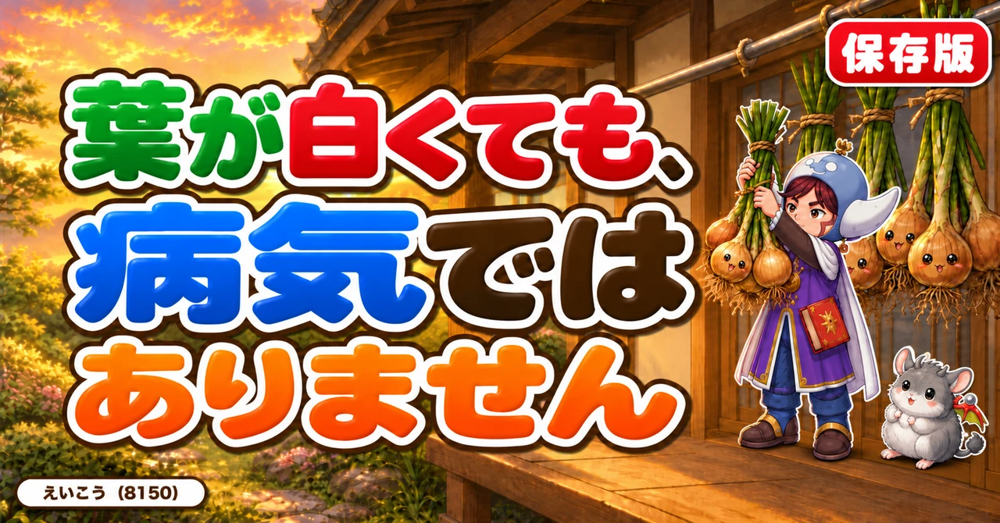
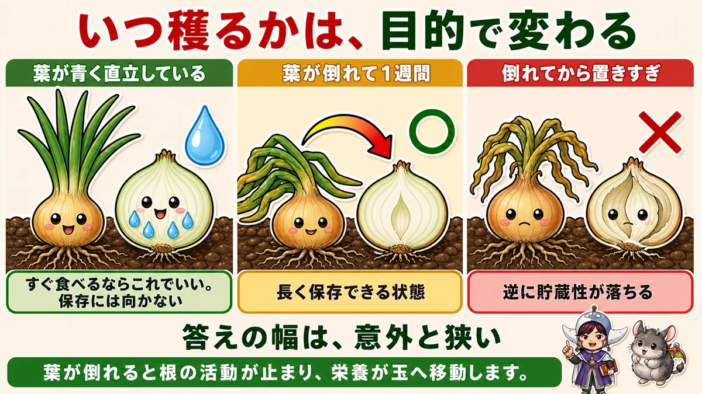
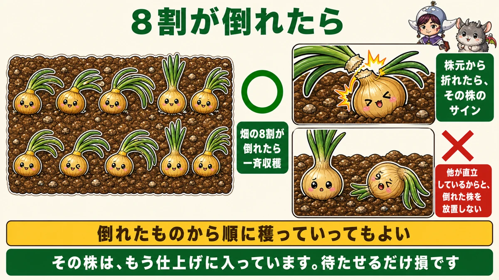
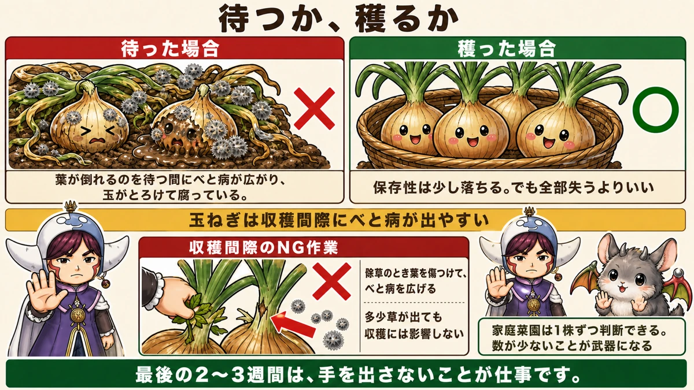
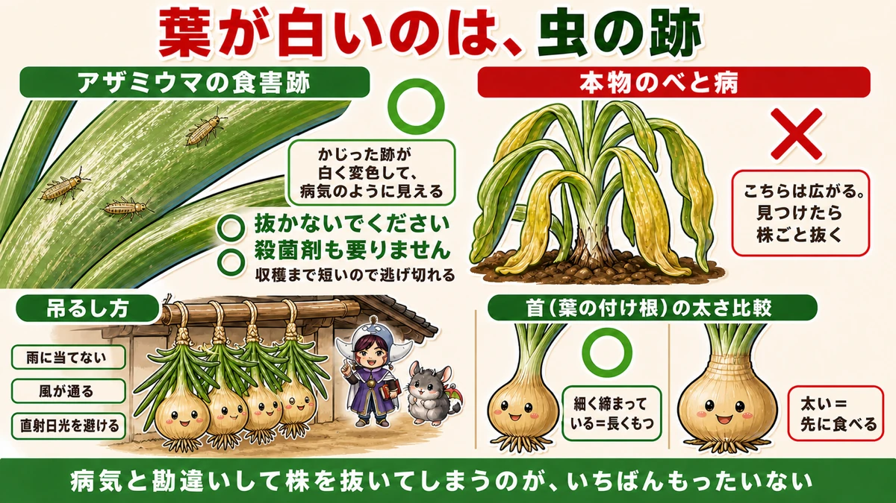

玉ねぎの収穫・保存の判断帳｜倒れた葉、乾燥、傷みの見分け方

どうも、8150（えいこう）です🌱 家庭菜園歴8年、理科の教員免許を持っていて、有機・無農薬で野菜を育てています。
📖 この記事の目次
この記事で分かること
- 食卓へすぐ出す玉と、あとまで残す玉では、収穫を決める基準が変わります。
- 畑をまとめて片づける目安は、葉が自然に倒れた株が7〜8割。少量なら株ごとに判断できます。
- 倒れ方は、成熟、強風、病気で違います。葉の姿だけでなく、首と玉の状態も見ます。
- 白いかすれはアザミウマの食害の可能性がありますが、白いものをすべて虫害と決めつけません。
- 保存の準備は『表面の土を乾かす』『首を乾かす』『雨を避けて保管する』の順で考えます。
- 品種の保存性と、収穫時の傷みを分けて確認。先に使う玉と、貯蔵候補の玉を最初に分けます。
玉ねぎって、抜く日より、抜いたあとに迷うことも多いんですよね。「葉は切るんやったっけ」「ここに吊ってええんかな」と、両手に玉を持ってから考え始めると、ちょっと忙しいです🧅
このページは、収穫前の畑から保存中の点検までをつなぐ判断帳です。これから抜くなら『早見』と『作業の手順』へ。葉の色や倒れ方が気になっているなら『失敗の見分け方』から読んでください。畑と保存場所を往復しながら、必要な項目に戻れる形にしています。
私が軸にしたいのは、『長く置く予定の玉ほど、収穫前から首の状態を見る』ということです。大きい玉なら長持ちする、という単純な話ではありません。見た目の立派さと保存への向き不向きは、分けて考えると作業が選びやすくなります。
早見：玉ねぎの育て方と収穫・保存（ひと目で分かる数字）
収穫を決める数字
- 一斉収穫の目安：全体の7〜8割が自然に倒れたころ。栽培説明によって7割、8割という違いがあります。真ん中の7.5割を新しい正解にする必要はありません。
- 個別株の待ち時間：健全な株を保存用に仕上げる説明では、自然に倒れて約1週間。倒れた玉を順次、早めに抜く説明もあります。病気や雨の状況を無視して待つ日数ではありません。
- すぐ食べる場合：玉が食べたい大きさなら、葉が立っている段階で収穫する選択肢があります。この早め収穫を長期保存の適期とは扱いません。
- 畑での初期乾燥：最低30分、余裕があれば2〜3時間という説明と、1〜2日という説明があります。数日置く手順もありますが、雨に再びぬらす予定では組みません。
- 葉を切って吊るす場合：首から10cm、または約15cm残す説明があります。葉そのものを結ぶ方法は別手順なので、切る長さだけを共通化しません。
- 吊るす量：少数の玉を分けて支えます。3個ずつをまとめる実演例がありますが、すべてを3個にそろえる決まりではありません。玉の重さと支えの確かさを見ます。
- 保存場所：雨を避けられる、日陰、空気が通る場所。収納へ切り替える場合も、首の乾きを先に確認します。
- 点検の間隔：材料に一律の『何日に1回』という指定はありません。食べる玉を取りに行くときなど、状態を見られる機会を作ります。
品種と栽培の数字も一緒に確認
この章の栽培時期は、秋に種をまいたり苗を植えたりして、春から初夏に収穫する作型の話です。秋冬に収穫する別の作型へ、そのまま日付を移さないでください。
- 種まき：9月中旬という例があります。地域と品種の適期を、種袋で確認します。
- 苗の植え時：10月下旬〜11月上旬、11月〜12月上旬、11月中旬〜12月中旬という複数の説明があります。全部を足して『いつでもよい期間』にはしません。
- 苗の太さ：6〜8mmという説明や、鉛筆ほどまでという選び方があります。10mmを超える太い苗のトウ立ちに注意する説明もありますが、細ければ細いほどよい、とはなりません。
- 苗の長さ：20〜25cm程度という例があります。これは植え付け用の苗の数字。保存前に残す葉の長さとは別です。
- 株間：15cm間隔の例があります。実際は苗の表示と、育てたい玉の大きさを照らし合わせます。
- うね幅：この材料には、全品種で共通に使える幅の指定はありません。植える列数、株間、通路、排水の余地から決めます。
- 土の酸度：pH6.0〜6.5という目安があります。土を測らずに、調整資材の量だけ増やす計画にはしません。
- 元肥の時期：植え付けから逆算して、3週間以上前に準備する説明があります。量は前作や土の蓄積で変わるため、このページで一律に指定しません。
- 追肥：元肥中心で追加しない方法、足りなければ1月に1回の方法、12月〜1月と2月に行う方法などがあります。収穫間際の追加は保存性を損なう可能性があります。
- 止め肥：中生・中晩生の栽培説明では2月中、遅くとも3月上旬までという例があります。『最後に肥料を入れる時期』のことで、すべての品種を同じ日に止める意味ではありません。
- 収穫月：中間地の説明では、極早生は3月下旬から、早生は4月、中生は5月、晩生は6月という例があります。地域、品種、植え時によって前後します。
- 収穫までの日数：材料には、種まきや定植から数えた共通の日数はありません。上の収穫月を、何日後という数字へ無理に換算しません。
- 連作の間隔：病気の出た場所では、玉ねぎなどをしばらく避ける説明があります。一律の年数は決めず、病気の履歴と地域の栽培案内で計画します。
保存期間は予定を立てる目安
品種区分を使った説明には、極早生で約1か月、早生で3〜4か月、中生で6〜7か月、晩生で8〜9か月という例があります。別の説明では、遅い区分でさらに長い貯蔵期間を挙げています。こうした数字は、家庭の軒下で全品種が必ず持つ期間ではありません。
赤玉ねぎについても、ある栽培例では約2か月、条件がよければ3か月という説明があります。赤い玉なら一律にこの期間、と覚えるより、植えた品種の保存性を確認してください。色だけで保存の予定を決めると、同じ赤でも違いを見落とします。
- 品種名と早晩性を確認できる
- すぐ使う量と、残しておきたい量を分けた
- 葉が倒れ始めた日を記録した
- 雨を避けて乾かせる場所を用意した
- 保存期間の数字より、実物の状態を優先すると決めた
早見は、作業を始めるための入り口です。数字を全部覚える試験ではないので、大丈夫。まず『今日抜くものは、すぐ使うんか、保存するんか』を決めるだけでも、次の確認がかなり絞れます☺️
作業の手順（時期の順）
1．収穫より前に、食べ方と保存場所を決める
- 手元の品種が早く食べるタイプか、貯蔵に向くタイプかを確認します。
- 収穫予定の量を見て、『すぐ使う』『乾かして残す』へ分ける見込みを立てます。
- 雨が吹き込まず、日中も風の通る場所を探します。
- 吊るす場所だけでなく、いったん広げて乾かす場所も確保します。
- 畑へ行ける日と天気予報を照らし合わせ、回収までできる量を考えます。
保存用に向かない品種を、吊るし方だけで長期保存向けに変えることはできません。早く食べるものは、収穫した時期のよさを楽しむ。長く残すものは、成熟と乾燥を確認する。この二つに分けると、すべての玉を同じ棚へ運ぶ必要がなくなります。
場所を探すときは、『屋根がある』だけで合格にしません。雨が斜めから入ることもありますし、壁際で空気が動きにくい場所もあります。洗濯物を干すのと似て、風が通ってこそ乾きやすいんですよね。ただし玉ねぎは、ぬれてもまた洗えばいい、という保管には向きません。

2．成熟へ向かう時期は、追加のお世話を見直す
- すでに施した肥料の時期と、品種の収穫予定を確認します。
- 成熟が近い株へ、さらに太らせたいからと追肥を足さないようにします。
- 水やりは生育段階と土の状態を区別して考え、成熟期の株を乾かしたい場面でむやみにぬらしません。
- 雑草へ対応するときは、玉や葉、根を傷めない作業を選びます。
- 手を入れる前に、必要な作業か、収穫へ切り替える方がよいかを確かめます。
玉がもう少し大きくなりそうだと、最後に何か足したくなるんですよね。でも、保存したい株では、収穫間際の肥料がかえって不利になることがあります。『大きく育てる時期』と『保存できる状態に整う時期』を分けるのがポイントです。
水の扱いも同じです。冬に雨が少なく、まだ育っている苗が強く乾燥している場面と、収穫へ向かう株を乾かしたい場面は違います。収穫期の水を控える話だけを覚えて、栽培期間の最初からずっと水を与えない、と広げないでください。
雑草は、小さいうちに除く説明があります。大きな草を勢いよく引き抜くと周囲の根を動かす心配があるので、地上部分を切る方法もあります。収穫前は何週間も何もしない、という固定の期間を作るより、いま何を守りたいのかを考えます。
3．葉が倒れたら、倒れた理由を確かめる
- 強風や大雨があった日と、倒れ始めた日を比べます。
- 葉の途中が折れているのか、玉の上の首が自然に曲がっているのかを見ます。
- 首に黒ずみや湿った傷みがないか、玉が軟らかくなっていないかを確認します。
- 健全な成熟のサインなら、その株を収穫候補として記録します。
- 病気や傷みが疑われる場合は、保存のための待ち時間を機械的に当てはめません。
成熟して葉が倒れることを『倒伏』と呼びます。むずかしい言葉ですが、ここでは自然に葉が寝てくる変化、と考えればOKです。強風で葉が折れた姿も似ているので、形だけを見て『もう完成』にしないのが大事です。
例えば、風の翌日に小さな株の緑の葉が途中で曲がっていたら、成熟とは違う可能性があります。緑の部分だけの損傷なら、そのまま様子を見る選択肢があります。一方、付け根が完全に折れている株は、その後の肥大をあまり見込めず、個別に収穫へ切り替える場合があります。
確認のために、首を何度も強く押したり、葉を引っ張ったりしなくて大丈夫です。見える色、湿り、倒れた位置を先に見ます。状態を調べようとして自分で傷を作ると、なんか話がややこしくなりますからね。
4．株ごと、または畑全体で収穫日を選ぶ
- 食べるために穫る株は、玉の大きさと健全さから選びます。
- 保存候補は、自然に倒れた日と首の状態を確認します。
- 健全な個別株を待つ方法なら、約1週間を目安にしつつ、毎回の観察で見直します。
- 一斉収穫なら、自然に倒れた株が全体の7〜8割に達しているかを見ます。
- 病気が広がる、雨で傷みが進むなどの状況では、成熟の目安より救えるものの確保を優先します。
割合と日数は、別のものを数えています。『7〜8割』は畑全体で何株倒れたか。『約1週間』は一つの株が倒れてからどのくらい経ったかです。畑の8割が倒れた日から、さらに全株を1週間待たせる、と合体させる必要はありません。
20株の畑を例にすると、14〜16株が自然に倒れてきたころが、割合を使う方法での目安です。この株数は計算例で、私の収穫記録ではありません。数えやすいように、倒れた株の場所をメモすると、次に畑へ行ったときの変化が分かります。
小さな家庭菜園では、全株がそろうのを待たずに分けて抜けます。先にできた株を食べ、健全で小さい株は残す。保存用だけ別の日に収穫する。作業が分かれる分、個々の状態を予定へ反映できるのが助かります。

5．病気が出た畑では、予定を前倒しする
- 異常のある株を、健全な株と分けて確認します。
- 病気が進んでいる株は、葉が立っている、玉が小さいという理由だけで残し続けません。
- 同じ畑でも、健全な小株まで機械的にすべて抜くのではなく、状態を見て判断します。
- 前倒しで収穫した健全な玉は、長期保存候補と分けます。
- 収穫後に広げる場所を確保し、ぬれた状態で一山に積みません。
病気が広がった場面では、『ある程度大きくなった玉だけ助ける』に限定しない考え方があります。小さくても、待ち続ける間に傷みが進むことがあるからです。サイズの理想より、いま残っている状態を見る判断です。
ただし、早く抜いたことが、その玉を安全に食べられる証明になるわけではありません。健全な玉を先に使う話と、腐った玉を食べる話は分けます。ぶよぶよしたり、液が出たり、異臭がしたりするものは、食べる候補から外してください。

6．晴れ間と回収の段取りをそろえて抜く
- 可能なら晴れが続き、土の湿りが落ち着いた日に収穫します。
- その日に回収し、広げて置ける量を決めます。
- 収穫時に傷がついたもの、首が湿って太いもの、健全に締まったものを分けます。
- 畑で乾かせる条件なら、表面の土が払い落としやすくなる程度まで空気に当てます。
- 雨が来る前に回収し、必要な乾燥を雨の当たらない場所で続けます。
当日が晴れていても、前日の雨で土が湿っている場合があります。空だけでなく足元も見る、ということですね。晴れの日を選べるならそうしますが、病気が進む畑で理想の天気を待ち続けるのは、別の危険を増やすこともあります。
貸し農園で何日も置けない場合もあります。畑で乾かす日数にこだわりすぎず、回収して雨を避けられる場所へ広げる段取りを用意してください。『今日は全部抜くぞ』より、『全部をどこへ広げるんや』を先に考えると、あとが助かります。
7．表面を乾かしたあと、首の乾きを待つ
- 湿った玉を重ねず、まわりへ空気が回るように広げます。
- 表面の土が乾いたかを確認します。
- 葉の付け根がまだみずみずしく、太いままではないかを見ます。
- 首が湿っている玉は、長期保管のための収納を急ぎません。
- 傷みが見つかった玉を外し、残ったものの乾燥条件も見直します。
表面が乾くことと、首まで乾くことは別です。外側の土がさらっと落ちても、首の内部には湿りが残っていることがあります。外皮だけを見て箱に収めると、保存の準備を途中で終えることになりかねません。
葉を切る作業も、抜いた直後に全部済ませるとは限りません。収穫直後に切ると切り口へ液が出て、傷みのきっかけになるという説明があります。乾かす工程を先に置き、どの保管方法へ進むかを決めてから処理します。
乾燥させるのは、玉全体をしわしわにするためではありません。食べる玉の部分を残しながら、保存に不利な余分の湿りを減らすためです。外皮、首、玉の硬さを別々に見ると、『乾いている』という一言が少し具体的になります。
8．吊るす方法か、通気を確保して置く方法を選ぶ
- 葉を残して支える方法か、葉そのものを結ぶ方法かを先に決めます。
- 葉を切る方法では、乾燥を進めてから、10〜15cm程度を残す説明を参考にします。
- 少数ずつに分け、首を傷つけるほど強く締めないようにします。
- 葉を結ぶ方法では、葉が硬い直後を避け、しんなりして扱える状態を待ちます。
- 吊るした直後と乾燥が進んだあとに、抜け落ちそうな玉がないか確かめます。
ここは、いくつかの方法の途中だけを寄せ集めないのが大切です。葉を短く切ってから、長い葉同士を結ぶ方法へ進もうとしても、肝心の葉が足りません。切る前に保存方法を決める。地味ですが、取り返しがつかないところなので先に考えます。
葉自体を結ぶ手順には、結び目を作り、その上で支える方法があります。ただ、文章だけで手の動きを正確に再現しにくい部分もあります。初めてで結び方に自信がなければ、不安定な状態のまま高く吊るすより、空気が通る置き方を選ぶ方が作業を確かめやすいです。
吊るさず置く方法もあります。玉を重ねすぎず、首が乾くまで通気を保ちます。吊るした場合より乾きにくくなることがあるので、『置けたから終わり』にしません。保存場所の条件と、玉の状態をセットで見てください。
9．保存中は、使う順番と傷みを見直す
- 早生など保存期間の短い品種を、先に使う予定へ入れます。
- 早めに抜いたものや、腐敗していない軽い傷のあるものを、健全な貯蔵候補と区別します。
- 玉を取りに行ったとき、首、外皮、玉の軟らかさ、においの変化を見ます。
- 傷んだ玉はまとめた場所から外し、接していた周りの玉も確認します。
- 同じ場所で傷みが続くなら、雨の吹き込み、湿り、空気の通りを見直します。
乾燥が進むと葉が細くなり、吊るした玉が抜けやすくなることがあります。収穫直後には支えられていても、あとから状態が変わるんですよね。食べる玉を外すときに、残りの支えも一緒に見ると、落下の確認を忘れにくくなります。
保存場所の玉を全部同じ順番で使う必要はありません。『大きいから最後まで残す』ではなく、『この玉は保存の条件がそろっているか』で決めます。今日使う玉を選ぶ行為が、そのまま点検にもなるかなと思います。
10．畑の片づけと、次の栽培への記録を残す
- 病気が疑われた株の葉や根は、健全な残りと分けます。
- 病気が出た場所では、残りをその場へ戻す前に処分方法を考えます。
- 次の作付けでは、同じ場所へ玉ねぎなどを続ける計画を見直します。
- 品種、収穫日、倒れ始めた日、傷みの有無を記録します。
- 小さい玉が多かった場合は、苗の太さや植え付け時期まで戻って振り返ります。
健全な根を土へ戻す説明もあれば、病気の出た株の残りを畑の外へ出す説明もあります。この二つは、残りの状態が違います。使えるものは使いたい気持ちがあっても、病気のある株まで同じ扱いにはしません。
私にも、鉛筆ほどの太さになる前の細い玉ねぎ苗を植えて、十分に大きくならなかったことがあります。『太い苗を避ける』だけに意識が向いて、反対側へ寄りすぎたんですよね。収穫で小ささが見えても、原因は抜く直前だけとは限りません。
小さい玉を見てから肥料を足す前に、苗の段階を振り返る。今回の保存結果を見てから、品種選びを振り返る。収穫はゴールですが、次の栽培のヒントも、ここで拾えます。
失敗の見分け方（症状→原因→やること）
葉が白くかすれ、色が抜けたように見える
- 症状：葉の一部が白っぽく透けたり、かすれたような跡になったりしています。
- 考えられる原因：アザミウマによる食害の可能性があります。ただし、白い変色だけで原因を確定できません。
- やること：小さな虫や食害跡を探し、首の色、玉の硬さ、株全体の変化も確認します。白いという理由だけで、すぐ株を撤去しません。
アザミウマはとても小さく、ぱっと見では分かりにくい虫です。見つからないから虫ではない、とも言えませんし、一匹見つかったからすべての異常が虫のせい、とも言えません。葉の変色と、株の傷みを分けて見ます。
収穫が近く、玉ができている株なら、多少の食害を受けても収穫へ進める場合があります。これは『収穫まで短い』という条件つきの考え方です。まだ育つ期間の長い小苗や、首まで傷んだ株へ、同じ安心を広げないでください。
殺菌剤は、虫がつけた食害跡を直すためのものではありません。まず原因を調べる順番にすれば、見た目に驚いて関係のない対応を重ねることを減らせます。虫の跡が気になっても、大丈夫。いきなり畑の全部を処分する前に、一株ずつ見るところからです。

葉が黄色くなって、株に元気がない
- 症状：葉が黄ばんだり、しおれたりして、周りの株と様子が違います。
- 考えられる原因：病気だけでなく、根の不調なども候補になります。黄色という色一つでは病名を決められません。
- やること：いつから変化したか、土の湿り、周囲への広がり、首と玉の異常を調べます。原因が不明なまま水や肥料を増やすのを避けます。
同じ黄ばみでも、畑の低い場所に偏っているのか、隣の株へ次々に出ているのかで、確認したいことが変わります。前者なら水のたまりや根の状態、後者なら病気の広がりにも注意を向けます。ここは診断を決めるためではなく、観察を具体的にするための分け方です。
色だけでは分からない場合は、株全体と首の写真、変化の日付を残して相談する方法もあります。『葉が黄色いです』だけより、『雨のあとから、この場所で、首はこうです』まで分かると、確認してもらいやすくなります。
首が黒ずむ、玉がぶよぶよする、液が出る
- 症状：葉が曲がった付近に黒い変色があり、首から玉へ軟らかい傷みが見られます。
- 考えられる原因：病気や腐敗が疑われる状態です。見た目だけで、必ずべと病と決めることはできません。
- やること：健全な株や貯蔵候補から分けます。成熟を待って置き続けず、周りの株も見て、収穫の前倒しを検討します。
この症状は、『葉が倒れたから完成』と見過ごさないための確認点です。健全な成熟で首が曲がることと、湿って軟らかく傷むことを、同じ倒伏の箱へ入れないでください。
病名をその場で確定できなくても、傷んだ玉を長く保存する山へ混ぜない判断はできます。原因を調べることと、被害を増やさない作業は同時に進められます。触って確かめる場合も、強く握りつぶして液を広げるような扱いは避けます。
強い風のあと、小さい株の葉が倒れた
- 症状：まだ緑の葉が風のあとに曲がり、玉は十分に大きくなっていません。
- 考えられる原因：葉の途中の折れや、付け根の損傷です。自然な成熟の倒伏とは区別します。
- やること：折れた位置を確認。緑の葉の途中だけなら回復を待つ選択肢があり、付け根が完全に折れた株は収穫への切り替えを考えます。
畑全体で倒れた株を数えるときも、強風による倒れを混ぜないでください。風で10株倒れたから成熟株が半分、とは数えられません。収穫割合は、成熟のサインとして倒れたものの割合です。
ほかの株がまっすぐだから、倒れた葉を無理に立て直したくなることもあります。でも、見た目をそろえる作業より、首がつながっているか、病気がないかを先に確認します。玉ねぎには玉ねぎの都合がある、という感じですね。
葉は元気なのに、玉が小さいまま
- 症状：周りに比べて玉が小さく、葉がまだ立っています。
- 考えられる原因：品種による成熟の遅さ、苗の状態、植え時、育っている間の条件などです。
- やること：品種と日付を確認し、健全なら残せる期間を検討します。収穫間際の追肥だけで急に取り戻そうとしません。
早生と晩生を並べて植えていれば、同じ日に葉が倒れなくても不思議ではありません。隣が穫れるから自分の株も遅れている、とは限らないんですよね。最初に品種を比べると、不要な焦りが減ります。
同じ品種でも、小さかった苗と十分育った苗では経過が違うことがあります。収穫の直前だけで原因を決めず、苗の太さ、根、冬越しの様子も振り返ります。食べられる大きさがあれば、家庭で使う分として先に抜く道もあります。
ネギ坊主が出た、玉が二つに分かれた
- 症状：花のつぼみをつけた軸が伸びる、または一つだった玉が分かれて見えます。
- 考えられる原因：前者はトウ立ち、後者は分球です。保存向けの健全な成熟とは違う状態として扱います。
- やること：貯蔵候補と分け、硬くなる前の早め収穫を検討します。花の部分を切っただけで、普通の玉に戻るとは考えません。
トウ立ちでは、苗が太すぎたことや冬に育ちすぎたことを挙げる説明があります。一方で、冬の肥料不足を要因として挙げる説明もあります。『肥料が多いから』『苗が太いから』の一つだけで、すべての株の原因を決めません。
分球した玉は、そのまま待てば一つの大玉へ戻るというものではありません。健全なものは食べる収穫へ回す考え方がありますが、傷みの有無は別に確かめます。形が違うことと、腐っていることを混同しないのがポイントです。
収穫した玉の首が、太く湿ったまま
- 症状：外側の土は乾いているのに、葉の付け根がみずみずしく、太さが残っています。
- 考えられる原因：早め収穫や、乾燥の途中など。貯蔵の準備が十分進んでいない可能性があります。
- やること：閉じた収納へ急いで移さず、雨を避けて通気を確保します。健全でも、先に使う予定へ入れることを考えます。
玉の大きさだけでは判断しにくい項目です。大玉なのに首が太い、小玉でも首が細く乾いている、という違いがあります。保存候補を選ぶときは、玉だけを並べて大きさ順にするより、首も同時に見てください。
乾かしている途中に軟らかさや異臭が出たら、『あと何日干せば直る』へ進みません。乾燥不足の確認と、腐敗の確認を分けて、傷んだものは外します。
吊るした玉が抜ける、葉が裂ける
- 症状：結んだところから玉が落ちそうになったり、支えた葉が裂けたりします。
- 考えられる原因：収穫直後の硬い葉を無理に曲げた、強く締めすぎた、乾いて葉が細くなったなどです。
- やること：落ちそうな玉をいったん下ろし、支え方と束の量を見直します。締め付けを強くするだけで解決しようとしません。
支えが弱いから強く縛る。でも強く縛ると傷がつく。ここ、力だけで解決しようとすると悩ましいです。葉の状態、少数に分けること、結び目や支える位置を順に見ます。
落下して傷がついた玉は、元の貯蔵候補へそのまま戻さず確認します。腐っていないものでも、長く残す順番を見直す理由になります。
保存中に軟らかい玉や芽が見つかった
- 症状：以前より軟らかくなった、においが強くなった、芽が伸び始めたなどの変化があります。
- 考えられる原因：腐敗、品種の保存性、保管環境、保存期間の経過などです。芽が出ることと腐ることは、同じ症状ではありません。
- やること：まず軟らかさや液、異臭の有無を確認します。傷んだ玉は外し、芽が出たものも長く残す山から分けて状態を確かめます。
芽が出た理由を一つに決めて、葉をもう一度切れば保存期間が戻る、と考えないでください。品種の保存性を確認し、健全なものをどの順で使うかを見直します。この材料には、発芽を止めるための温度や処理の決まった数字はありません。
一個の傷みを見つけたら、隣も軽く確認します。全部が駄目になったと慌てる必要はありませんが、その一個だけを外して保存場所の湿りを見ないと、同じことが続く可能性があります。玉の点検と、場所の点検を一組にします。
説明が分かれていること
倒れたら早く抜くか、約1週間待つか
- Aという説明：葉が倒れた株を順に収穫し、病気にかかる前になるべく早く畑から出します。
- Bという説明：健全な株なら、倒伏後に約1週間置いて、肥大と首の乾きを待ちます。
- どう考えればよいか：待つ利益がある状態か、待つことで傷みが増える状態かを分けます。保存を目指す健全な株と、病気が広がっている株へ同じ日数を当てません。
Aは、畑へ長く置く危険に重きを置いています。Bは、自然な成熟のあとに進む仕上がりに重きを置いています。どちらかを間違いとして捨てるより、自分の畑がどちらの条件に近いかを確認します。
必要な観察は、倒れた日、首と玉の状態、雨の見込みです。三つを見ずに日数だけ守ると、手順には従ったけれど実物には合わない、ということが起きます。待つ予定は、途中で変えてよい予定です。
一斉収穫は7割か、8割か
- Aという説明：全体の約7割が倒れてきたところで収穫時期と考えます。
- Bという説明：約8割を目安にまとめて収穫します。7〜8割という幅を示す説明もあります。
- どう考えればよいか：畑全体の成熟を見渡す目安として使い、最後の一株まで倒れるのを待ちません。少量なら個別株で収穫日を分けられます。
動画によって数字に幅がありますが、7割では未完成で8割に届いた瞬間に全株が完成する、という境界線ではありません。先に倒れた株と、最後まで立っている株には時間差があります。
畑全体を同じ日に片づけたいのか、保存向けの株を個別に仕上げたいのかでも、向く基準が変わります。割合は作業のまとめ方に使い、各株の異常を見ない理由にはしないでください。
初期乾燥は数十分か、数時間か、数日か
- Aという説明：畑で最低30分、余裕があれば2〜3時間ほど乾かし、表面の土を払える状態へ進めます。
- Bという説明：1〜2日ほど乾かす、あるいは畑で数日乾かしてから、さらに吊るして乾燥を進めます。
- どう考えればよいか：まず『畑で表面を乾かす工程』と『首を乾かして貯蔵へ進む工程』を分けます。短時間だけで長期保存の準備が全部終わったとは考えません。
同じ初期乾燥でも、置く期間の説明には差があります。その差を消して『平均で半日』などの新しい指示を作る必要はありません。表面の土、首の湿り、天気、畑に置けるかを見て、乾燥を続ける場所を選びます。
数日乾かす手順でも、途中で雨に当ててよいわけではありません。畑で十分な時間を取れないなら、雨を避けられる場所へ回収して続けます。数字より『ぬらし直さない』『湿ったまま積まない』という目的を先に置くと、予定が立てやすくなります。
葉は10cmか、15cmか、それとも切らないか
- Aという説明：葉を首から10cm、または約15cm残して処理します。
- Bという説明：長い葉を残し、しんなりしてから葉同士を結んで支えます。
- どう考えればよいか：切った葉を支える方法と、葉を結ぶ方法を分けます。残す長さは、そのあとの作業に合わせて選びます。
乾かしてから葉を残して吊るし、さらに乾燥が進んだところで短く切り、収納へ移す手順もあります。切るタイミングが二段階になっているので、『途中で葉を残す』と『保管前に短くする』は矛盾しません。
逆に、一つの方法の切る長さと、別の方法の結び方を合わせると、作業が成立しないことがあります。保存法を決める前に全部切らない、という順番を守る方が、細かい長さの暗記より役に立ちます。
追肥はしないか、冬に追加するか
- Aという説明：元肥を中心に育て、追肥は行わない、または不足した場合だけ1月に追加します。
- Bという説明：冬の生育に合わせ、12月〜1月、2月などに追肥し、品種に合わせて止める時期を決めます。
- どう考えればよいか：最初に入れた量、土の蓄積、品種、冬の育ち方をそろえて比べます。回数だけを抜き出して正解を選びません。
肥料を入れた直後に同じように効くとは限らないため、種類による違いもあります。このページでは、原文確認の済んでいない資材名や使用量を補って勧めません。実際に使っているものの表示と、採用する栽培方法を確認してください。
両方の説明に共通して注意したいのは、収穫間際に追加して保存性を損なわないことです。『追肥をする方法』から、最後までずっと追肥してよい、という結論にはしません。
連作を気にしないか、病気のあと場所を替えるか
- Aという説明：健全な栽培について、連作をあまり気にしないという考え方があります。
- Bという説明：病気が出た畑では、玉ねぎなどを続けず、しばらく場所を替えます。
- どう考えればよいか：病気の履歴があるかを先に確認します。健全だった畑の話を、病気が出た場所の免除には使いません。
この違いは、『何年あけるべきか』の数字だけでは整理できません。病気を繰り返した場所なのか、排水などの条件に問題がないかも見ます。家庭菜園では、次の作付け場所を考えるときに、今回の異常を地図へ残すだけでも役立ちます。
収穫後の根を利用するか、畑の外へ出すか
- Aという説明：健全な根を土へ戻し、後の栽培に利用する考え方があります。
- Bという説明：病気が出た株の残りは、畑の外へ持ち出して処分します。
- どう考えればよいか：根なら全部同じ、ではなく、病気の有無で分けます。残った葉も含め、傷んだものをその場へ戻す判断は慎重にします。
片づけは、土に戻すか捨てるかの二択だけを先に決めない方がよいです。まず分ける。分けてから、それぞれの扱いを決める。収穫した玉の仕分けと同じ順番ですね。
後作に枝豆を選べるか
- Aという説明：玉ねぎの収穫後に育てる候補として、枝豆を挙げています。
- Bという説明：冬どりの玉ねぎ跡地では、避けられるならマメ科を避けるという考え方もあります。
- どう考えればよいか：春から初夏の収穫跡地と、冬どりの跡地を同じ条件にしません。前作の管理と、後作の時期を確認して計画します。
ここは一律の禁止にも、一律のおすすめにもまとめにくい話です。玉ねぎ後なら枝豆が必ずよく育つ、と期待を固定せず、植えたい時期と土の条件から選びます。根粒菌への影響についても、この材料だけで一つの仕組みを断定しません。
虫が少ない野菜なら、点検は不要か
- Aという説明：ある栽培経験では、玉ねぎに虫がほとんど来なかったとしています。
- Bという説明：収穫直前のアザミウマや、植え付け後の虫の発生を扱っています。
- どう考えればよいか：虫が少なかった経験は、その畑と時期の結果です。玉ねぎは害虫がいない野菜、と一般化しません。
観察することと、何かを散布することは別です。虫が少ないかもしれない畑でも、見る作業は続けられます。葉の異常を見つけたときに、病気だけでなく虫も候補へ入れられるようにしておきます。
よくある質問
葉が倒れていない玉を抜いてもいいですか
すぐ使う目的なら、玉が食べたい大きさに育った段階で収穫する選択肢があります。健全かを確認し、保存用に仕上がった玉とは分けてください。葉が立っている段階の収穫を、そのまま長期貯蔵へつなげないようにします。
全部の株が倒れるまで待つ方がよいですか
一斉収穫には、自然に倒れた株が7〜8割という目安があります。全部がそろうまで待つと、先に倒れた株を長く置くことになります。少量なら、成熟と状態を見て順に抜く方法も選べます。
倒れた日が分からないと、収穫できませんか
日付は判断を助ける記録ですが、分からなければ作業ができないわけではありません。首の乾き、玉の硬さ、病気の有無を確認し、天気と用途を合わせて決めます。今から倒れ始めた株には、日付だけメモしておくと次の判断が楽です。
風で倒れた株にも、1週間の目安を使いますか
使う前に、成熟による倒伏かを確かめます。強風で緑の葉が途中から折れた株と、自然に首が弱くなって倒れた株は違います。付け根が完全に損傷した場合も、健全な成熟株と同じ待ち方にはしません。
白い葉を見つけたら、放っておいてよいですか
まず虫の食害か、別の異常かを確認してください。収穫直前のアザミウマの跡なら、収穫へ進める場合があります。ただし、首の黒ずみ、玉の軟らかさ、広がる傷みまで放置する意味ではありません。
小さい玉でも、病気が出たら抜くべきですか
病気が進んでいる株を、サイズだけを理由に残し続けない考え方があります。一方、同じ畑の健全な小株は、様子を見て残せる場合があります。畑全体を一律に扱わず、異常株と健全株を分けて判断します。
雨が続き、晴れた日を選べないときはどうしますか
畑で病気や傷みが進んでいるなら、理想の晴れ間を待つことだけにこだわりません。収穫後、雨を避けられる場所へ運んで広げ、通気を確保します。ぬれた玉を積んで置く予定にならないよう、受け入れ場所を先に用意します。
30分乾かしたら、そのまま箱に入れていいですか
短時間の乾燥は、表面の土や余分な湿りを減らす最初の工程です。首が湿ったままなら、保存の準備は終わっていません。箱へ収める前に、首の状態と風の通りを確かめます。
長く日に当てるほど、保存しやすくなりますか
初期乾燥と、長い期間の保管は分けて考えます。収穫直後に晴れた畑で乾かす説明があっても、その後ずっと直射日光へ当てる手順ではありません。保管は日陰で、雨を避け、空気の通る場所へ移します。
葉は抜いた直後に切ってよいですか
保存目的なら、最初の乾燥を進めてから処理する方法があります。収穫直後の切り口に液が出て傷みのきっかけになる、という説明もあります。すべてをすぐ切りそろえる前に、乾燥工程と吊るし方を決めてください。
葉を残す長さは、どれが正解ですか
首から10cm、約15cmという説明があります。長い葉同士を結ぶ方法は別なので、長さだけを共通の決まりにしません。切ってから困らないよう、選んだ方法の順番に合わせます。
吊るせない家でも保存できますか
雨を避けられて、空気が通る場所へ置く方法があります。玉を重ねすぎず、首の湿りが残っていないか確認してください。吊るす場合より乾きにくくなることもあるので、置き場所と玉の点検を続けます。
太い首の玉は、よく育ったから長持ちしますか
大きさと保存性は分けます。首が太く湿っている玉は、乾燥や成熟の確認が必要です。健全なものでも、締まって乾いた貯蔵候補より先に使う予定を考えます。
早生も、しっかり干せば冬まで残せますか
乾燥の工夫だけで、品種本来の保存性が同じになるわけではありません。早く収穫して食べる品種と、長く残すための品種は、植える段階から用途が違います。品種表示を見て、食べ切る予定を立てます。
赤玉ねぎは、どれくらい保存できますか
材料には、ある栽培例で約2か月、条件がよければ3か月という説明があります。ただし、すべての赤玉ねぎの保証ではありません。色ではなく品種と状態を確かめ、期間だけを頼りに残しません。
玉をもっと大きくするため、収穫前に追肥してもいいですか
収穫間際の追肥は、保存性を下げる可能性があります。品種に合わせた止め肥の時期を確認し、成熟へ向かう株に追加を重ねません。小さい原因は、苗や植え時まで戻って振り返ることも必要です。
収穫前の雑草は、全部放置する方がよいですか
全面的に放置する、という決まりにはしません。小さいうちに除く説明や、大きい草は切って根を動かさない方法があります。作業の必要性を見て、玉ねぎの葉や根を傷めない扱いを選びます。
トウ立ちした株は、花を切れば元に戻りますか
花の部分を切っても、普通の玉へ戻るとは考えません。硬くなる前の早め収穫を検討し、健全な貯蔵候補とは分けます。切ったあとに葉が残っていることと、保存向きへ回復したことは別です。
保存中に一個腐っていたら、全部処分しますか
まず傷んだ玉を外し、接していた玉や周りの状態を確認します。残りも同じように傷んでいると決めつけず、一個ずつ見てください。同時に、雨や湿り、空気の通りに問題がないかも調べます。
収穫したあとの根は、全部土へ戻せますか
健全な根を利用する話と、病気のある株の残りを外へ出す話は条件が違います。病気が疑われるものまで、まとめて土へ戻しません。次の作付けを考える前に、残りの状態を分けます。
学ぶ：玉ねぎの成熟と乾燥のしくみ🔬
倒れる葉は、形の変化と状態の変化を分けて見る
葉が立っているときと、首から曲がっているときでは、株の姿が変わります。でも、形だけでは理由が一つに決まりません。成熟による変化もあれば、風で力が加わった結果もあります。病気で組織が傷んで支えられなくなることも、別の候補です。
成熟期の倒伏については、葉を支える軸の内部が空洞化して弱くなるという説明があります。ここで大事なのは、『折れたらすべて同じ』と見ないことです。途中の葉が折れる場合と、首の状態が変わって倒れる場合では、玉が育つ見込みも、作業の選び方も変わります。
観察するときは、玉のすぐ上を見てみてください。葉先だけを見ていたときには気づかなかった、曲がる位置や湿りの違いがあります。理科の観察って、見る場所を少し変えるだけで、情報が増えるんですよね。
成熟へ向かうと、水の出入りも変わる
生育中の株は、根から水や養分を取り込み、葉や玉を育てています。成熟が進む時期には、その吸収が落ち着き、玉や首の水分の状態も変わっていく、という説明があります。だから、保存の判断では葉の倒伏と首の乾きが結びついています。
ここを『葉が倒れた瞬間に、すべての根の働きが完全停止する』と読むと、少し話が強すぎます。変化が進む目安として見ることと、一瞬で切り替わる仕組みとして説明することは違います。日付だけでなく首の状態を確認するのは、株ごとの進み方を見るためです。
倒れたあとにも玉が大きくなるという栽培説明があります。ただし、待つあいだに必ず大幅に太る、と約束するものではありません。少し大きくなる利益と、病気や雨で失う危険を同じ予定の中で考えます。自然の変化を待つことにも、条件があるということですね。
葉の中の栄養がすべて玉へ移る、という説明を、この水分の話だけから付け足すこともしません。水の吸収が落ち着くこと、首が乾くこと、玉の肥大を待つことは、材料で確認できる範囲ごとに整理します。理由を詳しくするときほど、分かったことを一段ずつつなぐのが大事です。
土が乾くことと、首が乾くことは違う
収穫した玉の表面には、土や水分が付いています。それを空気に当てると、表面の水分が減り、土を払い落としやすくなります。この段階は、目でも手でも変化を確かめやすいです。
ところが、表面の変化だけで、首の湿りまで同じように減ったとは言えません。乾燥は、表面から見える状態と、付け根に残る状態を分けて考える必要があります。『土が落ちた』『外皮が乾いた』『首が締まった』は、同じチェックではありません。
台所で器の外側が乾いても、重ねた内側に水が残ることがありますよね。玉ねぎの乾燥も、時間だけでなく空気が触れる場所を考えると分かりやすいです。重なった部分や空気の動かない場所があれば、乾く条件はそろいにくくなります。
ここで吊るす意味が見えてきます。玉の周りへ空気を通しやすくし、乾燥と保管を続けるためです。見た目が農家さんの軒下っぽくなるから、というだけではありません。置く方法を選ぶ場合も、同じ目的に近づけるため、重ね方や場所を見直します。
風が通ることと、雨を防ぐことは一組
乾かした玉に雨がかかれば、また湿りを増やすことになります。せっかく進めた乾燥を戻さないために、屋根の有無だけでなく、吹き込む向きも確認します。日陰と通気だけがそろっていても、雨が入るなら条件が足りません。
逆に、雨を完全に避けられる場所でも、空気が動かず湿った玉が集まっていれば、乾燥を進めにくくなります。『雨が来ない』と『湿りが抜ける』を別の項目として見る理由です。
日光の扱いも、工程を分けると理解しやすくなります。収穫直後に晴れた畑で乾かすことと、その後ずっと直射日光の下へ置くことは、目的が違います。最初に余分な湿りを減らし、保管では雨を避けられる日陰へ移す、という順番です。
葉が乾くと、支える条件も変わる
収穫直後の葉は、水分があり、硬さや張りが残っています。葉を曲げて結ぶ方法では、その硬い状態で無理に扱うと裂けやすいという説明があります。しんなりするまで待つのは、結びやすさを変えるためです。
乾燥がさらに進めば、葉は細くなります。最初に支えていた結び方でも、隙間ができて抜けやすくなることがあります。『最初は落ちなかった』という確認だけでは、その後まで支えを保証できません。
だから、玉の傷みを点検するときに、支えの緩みも一緒に見ます。乾燥は保存に必要な工程ですが、その同じ変化が吊るし方へ影響するんですよね。一つの変化が、よい面と注意したい面の両方を持つ例です。
保存性は、品種と育て方と収穫後の扱いで考える
早く収穫できる品種には、早く食べるよさがあります。遅く収穫する区分には、長く貯蔵する用途に向くものがあります。これは、収穫する日だけをずらせば、同じ玉が別の性質になるという話ではありません。
品種を選ぶ段階の違いに、栽培中の肥料の扱い、収穫時の成熟や傷、乾燥と保管の条件が重なります。品種表示で保存向きとなっていても、首が湿ったまま収納したり、傷んだ玉を混ぜたりすれば、その性質を生かしにくくなります。
反対に、丁寧に乾かしたからといって、早く食べる品種が一律に晩生と同じ期間持つわけでもありません。『品種の性質を確認する』『その性質を生かす扱いをする』という二段階で見ると、保存期間への期待が現実に近づきます。
理科の章を読み終えたら、難しい名前より、首を一つ見てみてください。葉の倒れた位置、湿り、太さ、玉の硬さ。四つを見比べるだけでも、収穫日を決めるための材料が増えます。暗記した日数を当てるより、実物を見て「この株はこっちやな」と選べる方が、面白くなるかなと思います🔬
まとめ
玉ねぎの収穫と保存は、『食べる目的を決める』『成熟と傷みを見分ける』『乾燥から保管までつなぐ』の順で整理できます。抜くタイミングだけを正解に近づけようとするより、抜いたあとまで予定に入れる方が、作業が落ち着きます。
これから収穫するみなさんは、まず次の順で確認してください。
- 品種の保存性を調べ、すぐ使う量と残す量を決めます。
- 倒れた株について、成熟か、風や病気によるものかを分けます。
- 健全な保存候補は、首の状態と倒れた日を確認します。
- 一斉収穫の7〜8割、個別株の約1週間は、用途の違う目安として使います。
- 病気が進む場合は待つ予定を変え、収穫後に雨を避けて乾かす場所を確保します。
収穫後は、この項目へ切り替えます。
- 表面の土が乾いたことと、首まで乾いたことを分けて見た
- 葉を切る前に、選ぶ保存方法の順番を決めた
- 首を強く締めすぎず、落ちない支え方を確認した
- 雨の吹き込み、直射日光、空気の通りを確認した
- 先に使う健全な玉と、長く残す候補を分けた
- 傷んだ玉を外し、接していた玉と保存場所も見直した
白い葉を見つけたら、まず虫の跡も候補に入れます。でも、『白いから病気ではない』で観察を終えません。倒れた株を見つけたら、成熟の可能性を考えます。でも、『倒れたから保存できる』で終えません。見た目のサインを、首と玉の確認へつなぐのがこのページの使い方です。
日数や割合に複数の説明があるのは、畑をまとめて収穫するのか、株ごとに仕上げるのか、すぐ食べるのか、保存するのかという条件が違うからです。数字を一つに丸めるより、自分の目的を先に選んでください。健全な株を待つ予定も、病気や天気で見直して大丈夫です。
今日できる一つを選ぶなら、保存する予定の株の首を見て、倒れ始めた日をメモしてみましょう。もう収穫済みなら、置き場所へ行って一個だけ確認します。ほんまに小さな作業ですが、次に何をするかが見えやすくなるかなと思います☺️
麻ひも
2個ずつ葉を結んで吊るします。葉を10cmほど残して切るのがコツです。
![[商品価格に関しましては、リンクが作成された時点と現時点で情報が変更されている場合がございます。]](https://hbb.afl.rakuten.co.jp/hgb/56bc2b48.a5f55627.56bc2b49.c4ff0d7c/?me_id=1372205&item_id=10005292&pc=https%3A%2F%2Fthumbnail.image.rakuten.co.jp%2F%400_mall%2Faudiofuntech%2Fcabinet%2Fproducts%2Fetc%2Fetc06%2F7052-1.jpg%3F_ex%3D240x240&s=240x240&t=picttext "[商品価格に関しましては、リンクが作成された時点と現時点で情報が変更されている場合がございます。]")

収穫ハサミ
葉と根を落とすときに。よく切れるもののほうが、傷口が早く乾きます。
![[商品価格に関しましては、リンクが作成された時点と現時点で情報が変更されている場合がございます。]](https://hbb.afl.rakuten.co.jp/hgb/56d22030.def85fa7.56d22031.b89fde86/?me_id=1250472&item_id=10022339&pc=https%3A%2F%2Fthumbnail.image.rakuten.co.jp%2F%400_mall%2Fplantz%2Fcabinet%2F01%2Ft-13.jpg%3F_ex%3D240x240&s=240x240&t=picttext "[商品価格に関しましては、リンクが作成された時点と現時点で情報が変更されている場合がございます。]")
収穫メッシュバッグ
吊るせない分は、風の通る袋へ。密閉すると必ず腐ります。

乾燥剤
保存箱に。玉ねぎは湿気で一気にいきます。
![[商品価格に関しましては、リンクが作成された時点と現時点で情報が変更されている場合がございます。]](https://hbb.afl.rakuten.co.jp/hgb/56eb9618.3f325504.56eb9619.e861bcb7/?me_id=1358935&item_id=10000079&pc=https%3A%2F%2Fthumbnail.image.rakuten.co.jp%2F%400_mall%2Fhw-enable%2Fcabinet%2Fsilicagel%2Ffujigel%2F10gn.jpg%3F_ex%3D240x240&s=240x240&t=picttext "[商品価格に関しましては、リンクが作成された時点と現時点で情報が変更されている場合がございます。]")